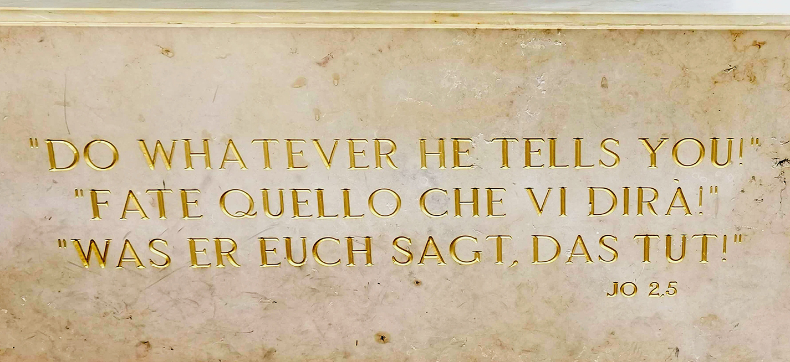
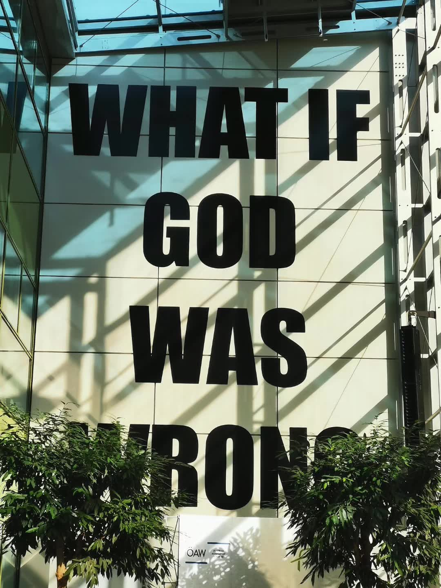

Posts
Farewell, Vienna!
Goodbye to the city renowned for music, the Blue Danube, and where I have lived and worked for four years — acknowledged as the most habitable place in the world.
Whenever friends came to visit, I'd point out the iconic trio of statues: Mozart, Beethoven, and Strauss.
Yet, while art merely glanced at me, science was my true calling.
The VBC is a vibrant mix of youth and legacy. It houses institutes that honor the pioneer of genetics, a Nobel laureate, and all are highly respected in the community. It recruits many scientists whose research is (or should be) in textbooks and, of course, many young people who will be world-renowned in the future, furthering the advancement of human knowledge. Less than a 10-minute walk west of the VBC is the resting place of Mozart (one of the likely candidates). Two tram stops east is the birthplace of the physicist who reported "What is Life" and is most famous for his cat. Come to work every day with reverence, although the more I think about it, the smaller I feel.
In short, VBC is exceptional, evidenced by the contrasting mottos:
Outside the Campus:

Inside the Campus:

Goodbye Magnus, I miss those Friday afternoons when we spent time with the sun discussing progress.
Goodbye to colleagues who discuss openly and help each other, and to friends who enjoy each other's company in many ways outside the life of scientific research.
Goodbye to nice managers, especially those who keep the balance on my credit card growing (albeit slowly).
Goodbye to the old man at the reception who took the initiative to open the door for me on weekends. Goodbye to the super enthusiastic and energetic young Ingrid who remembered everyone's name.
Goodbye to the neighbors who were so nice to keep packages for me (sorry, Benji).
Goodbye to those novel sports escapades, especially the almost dangerous snow hike.
Goodbye to the Danube that listened to me.
Goodbye to the sensory tapestry of Vienna - its smells, tastes, sounds, and the tangible light and air that now manifest as memories.
♪♪Let it go, let it go
…
Let the storm rage on
The cold never bothered me anyway♪♪
What's next?
It is a completely new place (though unlike the New World of America), a new type of research institution that I have never been before. Located on an island.I was just told that the building was very beautiful and not far from the sea, with a swimming pool on the roof, a gym of a whole floor, and a huge canteen with many menus on the first floor.
I was just told that there are many influtiel senior scientists and warmly invited more young scientists to join.
Anyway, stay tuned for more!
`:wq; shutdown -r now`